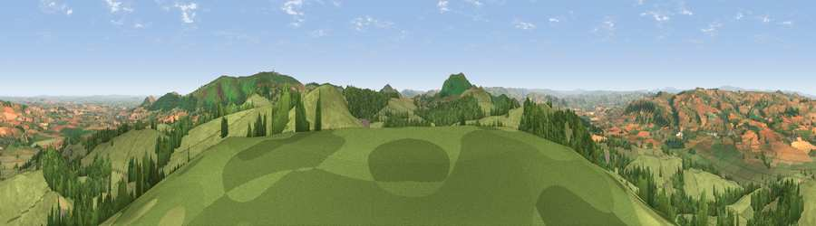

Bromlow Callow
#1928 in England · top 3% of its area beats it · near ShelveThe view, rendered

A 360° render of this exact spot computed from the terrain model, tree cover and land cover — summer colours, afternoon light, calibrated against photographs of famous viewpoints. Real trees, hedges and buildings will differ in detail.
The panorama
Grey silhouette: terrain skyline in each direction (720 bearings, Earth curvature and refraction included). Dashed green: skyline with trees (+15 m) and buildings (+8 m) as obstacles. Blue strip: how far the ground is visible on each bearing.
Where the view opens
Wedge length = distance to the farthest visible ground on that bearing (vegetation-aware). Rings at 10, 25 and 50 km.
What fills the view
69% grassland · 22% woodland · 8% cropland ·
Angular shares of the visible panorama (visual magnitude), not map area. Landscape diversity 0.36 (0–1 Shannon).
Key numbers
More beautiful places nearby
The staircase of upgrades: each row has a higher view potential than everything closer. Driving times are estimates from straight-line distance, calibrated against real road routing — check an actual route before setting out.
| Place | Direction | Drive | Score |
|---|---|---|---|
| Viewpoint near Stiperstones | ESE · 5 km | ~11 min | 77.4 |
| Viewpoint near Stiperstones | E · 5 km | ~12 min | 82.0 |
| Earl's Hill | ENE · 9 km | ~18 min | 82.2 |
| Viewpoint near Halfway House | N · 12 km | ~23 min | 83.3 |
| The Lawley | ESE · 17 km | ~30 min | 85.8 |
| Viewpoint near Little Wenlock | ENE · 31 km | ~48 min | 86.6 |
| North Hill | SE · 71 km | ~94 min | 86.8 |
| Worcestershire Beacon | SE · 71 km | ~95 min | 87.1 |
52.60414, -2.99924 · source: osm peak · position refined by local search. Computed location — check access rights before visiting.